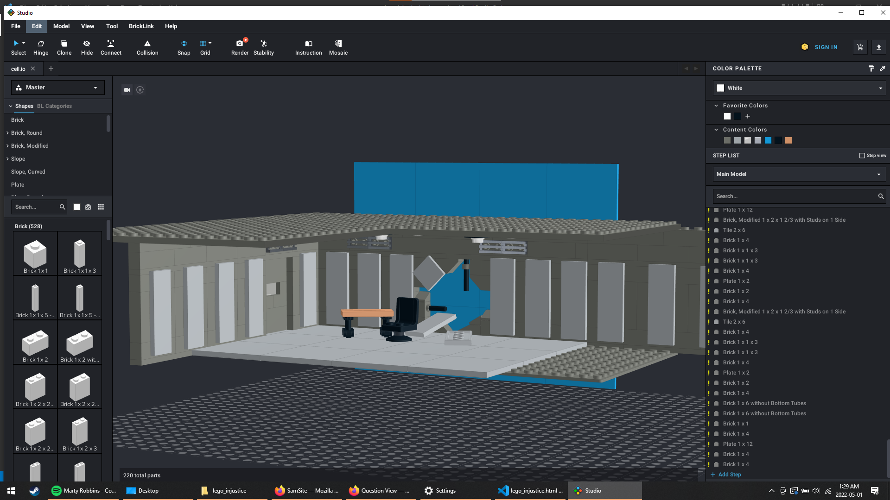
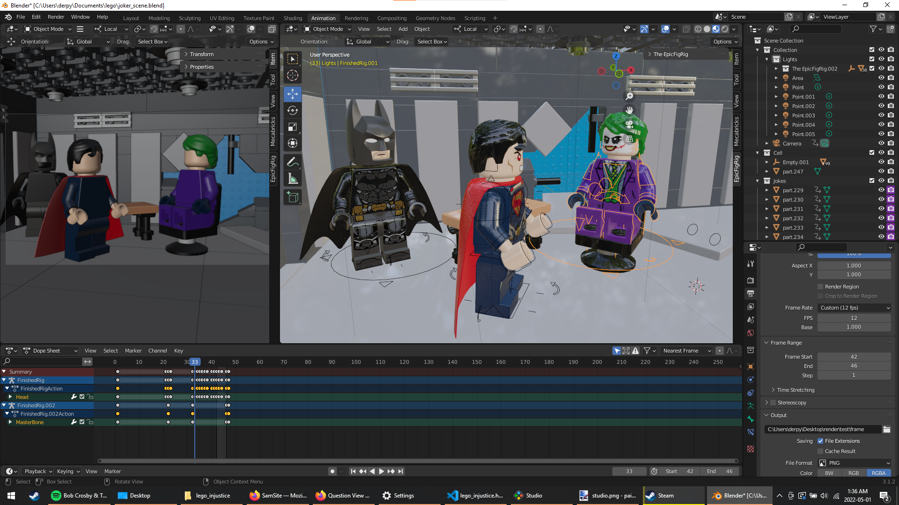

This four second animation project was inspired by an earlier render I did using Mecabricks in Blender. Pictured below is the render I first made using Mecabricks.

I decided fairly early on that I want to have the animation focus on Injustice, (the capes were annoying but I would make do). Eventually choosing the scene where Superman kills the Joker. Next up was to build the set, I was able to do so in Stud.io
From here, importing the scene into Blender was a very trivial matter, there are several YouTube tutorials that can show the process very well.
The actual animation process was also straight forward, just REALLY time consuming. I decided to treat the animation process as if I was doing a normal stop motion video, moving each arm and anything in the scene individualy nudge by nudge.
Animating the clip didn't take too long, managing to grind out the main bits having worked on and off for three days. The capes alluded to earlier were really the only annoyance, the rig I had downloaded for the minifigs did not include support for capes so the capes were rigid, making working around them very hard. You can see in the final clip the capes never moving. Anyway now the longest part of the project by far was ready to begin, after some test renders I set the animation to render. The whole process took a few full days rendering 47 frames at an average rate of 40 min/frame.
The animation was now almost ready to be uploaded, just needing some audio. Cue me heading to Audacity and putting on my best Joker and Superman impression.